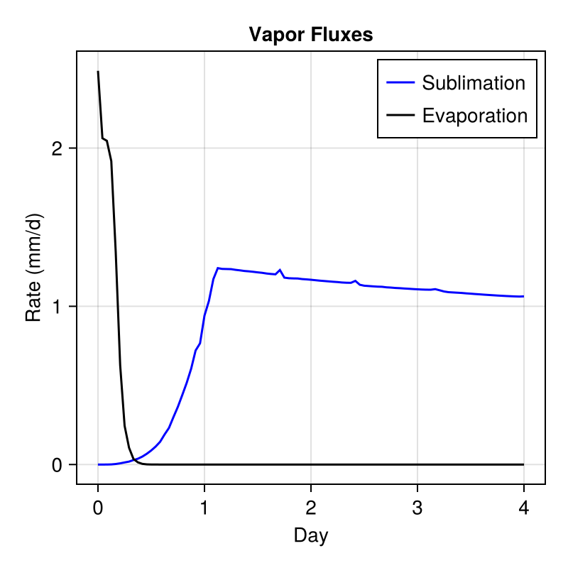
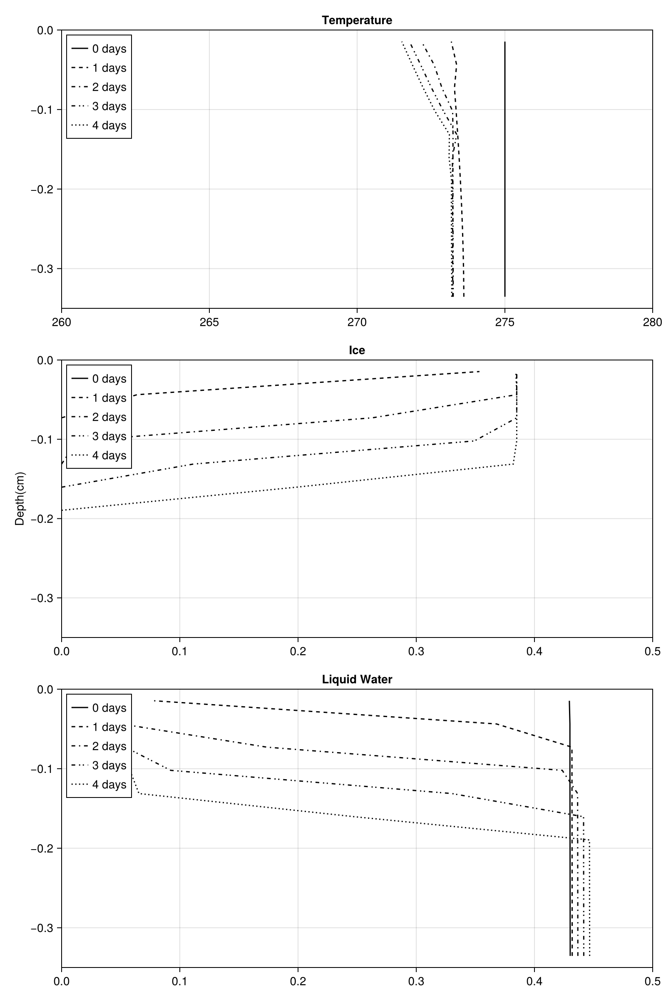

Eventually this will be a bare soil site experiment, showing how to set up the soil model in a column with prescribed forcing and comparing to data.
using CairoMakie
import SciMLBase
import ClimaTimeSteppers as CTS
using Thermodynamics
using ClimaCore
import ClimaParams as CP
using SurfaceFluxes
using StaticArrays
using Dates
using DelimitedFiles: readdlm
using ClimaLand
using ClimaLand.Domains: Column
using ClimaLand.Soil
import ClimaLand
import ClimaLand.Parameters as LP
import SurfaceFluxes.Parameters as SFP
FT = Float64;
earth_param_set = LP.LandParameters(FT)
thermo_params = LP.thermodynamic_parameters(earth_param_set);
start_date = DateTime(2005)
SW_d = (t) -> 0
LW_d = (t) -> 270.0^4 * 5.67e-8
radiation = PrescribedRadiativeFluxes(
FT,
TimeVaryingInput(SW_d),
TimeVaryingInput(LW_d),
start_date,
);Set up atmospheric conditions that result in the potential evaporation rate obsereved in the experiment. Some of these conditions are reported in the paper.
T_air = FT(270.0)
rh = FT(0.38)
esat = Thermodynamics.saturation_vapor_pressure(
thermo_params,
T_air,
Thermodynamics.Liquid(),
)
e = rh * esat
q = FT(0.622 * e / (101325 - 0.378 * e))
precip = (t) -> 0.0
T_atmos = (t) -> T_air
u_atmos = (t) -> 1.0
q_atmos = (t) -> q
h_atmos = FT(0.1)
P_atmos = (t) -> 101325
gustiness = FT(1e-2)
atmos = PrescribedAtmosphere(
TimeVaryingInput(precip),
TimeVaryingInput(precip),
TimeVaryingInput(T_atmos),
TimeVaryingInput(u_atmos),
TimeVaryingInput(q_atmos),
TimeVaryingInput(P_atmos),
start_date,
h_atmos,
earth_param_set;
gustiness = gustiness,
);Define the boundary conditions
top_bc = ClimaLand.Soil.AtmosDrivenFluxBC(atmos, radiation)
zero_water_flux = WaterFluxBC((p, t) -> 0)
zero_heat_flux = HeatFluxBC((p, t) -> 0)
boundary_fluxes = (;
top = top_bc,
bottom = WaterHeatBC(; water = zero_water_flux, heat = zero_heat_flux),
);[ Info: Warning: No runoff model was provided; zero runoff generated.
Define the parameters n and alpha estimated by matching vG curve.
K_sat = FT(225.1 / 3600 / 24 / 1000)
vg_n = FT(10.0)
vg_α = FT(6.0)
hcm = vanGenuchten{FT}(; α = vg_α, n = vg_n)
ν = FT(0.43)
θ_r = FT(0.045)
S_s = FT(1e-3)
ν_ss_om = FT(0.0)
ν_ss_quartz = FT(1.0)
ν_ss_gravel = FT(0.0)
emissivity = FT(1.0)
PAR_albedo = FT(0.2)
NIR_albedo = FT(0.4)
z_0m = FT(1e-3)
z_0b = FT(1e-4)
d_ds = FT(0.01)
params = ClimaLand.Soil.EnergyHydrologyParameters(
FT;
ν,
ν_ss_om,
ν_ss_quartz,
ν_ss_gravel,
hydrology_cm = hcm,
K_sat,
S_s,
θ_r,
PAR_albedo,
NIR_albedo,
emissivity,
z_0m,
z_0b,
earth_param_set,
d_ds,
);Domain - single column
zmax = FT(0)
zmin = FT(-0.35)
nelems = 12
soil_domain = Column(; zlim = (zmin, zmax), nelements = nelems);
z = ClimaCore.Fields.coordinate_field(soil_domain.space.subsurface).z;Soil model, and create the prognostic vector Y and cache p:
sources = (PhaseChange{FT}(),);
soil = Soil.EnergyHydrology{FT}(;
parameters = params,
domain = soil_domain,
boundary_conditions = boundary_fluxes,
sources = sources,
)
Y, p, cds = initialize(soil);Set initial conditions
function hydrostatic_equilibrium(z, z_interface, params)
(; ν, S_s, hydrology_cm) = params
(; α, n, m) = hydrology_cm
if z < z_interface
return -S_s * (z - z_interface) + ν
else
return ν * (1 + (α * (z - z_interface))^n)^(-m)
end
end
function init_soil!(Y, z, params)
FT = eltype(Y.soil.ϑ_l)
Y.soil.ϑ_l .= hydrostatic_equilibrium.(z, FT(-0.1), params)
Y.soil.θ_i .= 0
T = FT(275.0)
ρc_s = @. Soil.volumetric_heat_capacity(
Y.soil.ϑ_l,
FT(0),
params.ρc_ds,
params.earth_param_set,
)
Y.soil.ρe_int =
Soil.volumetric_internal_energy.(FT(0), ρc_s, T, params.earth_param_set)
end
init_soil!(Y, z, soil.parameters);Timestepping:
t0 = Float64(0)
tf = Float64(24 * 3600 * 4)
dt = Float64(5)5.0We also set the initial conditions of the cache here:
set_initial_cache! = make_set_initial_cache(soil)
set_initial_cache!(p, Y, t0);Timestepping functions:
exp_tendency! = make_exp_tendency(soil)
imp_tendency! = make_imp_tendency(soil)
jacobian! = ClimaLand.make_jacobian(soil)
jac_kwargs = (; jac_prototype = ImplicitEquationJacobian(Y), Wfact = jacobian!)
timestepper = CTS.ARS111()
ode_algo = CTS.IMEXAlgorithm(
timestepper,
CTS.NewtonsMethod(
max_iters = 1,
update_j = CTS.UpdateEvery(CTS.NewNewtonIteration),
),
)ClimaTimeSteppers.IMEXAlgorithm{ClimaTimeSteppers.Unconstrained, ClimaTimeSteppers.ARS111, ClimaTimeSteppers.IMEXTableau{ClimaTimeSteppers.SparseCoeffs{(2, 2), (true, false, true, true), StaticArraysCore.SMatrix{2, 2, Int64, 4}}, ClimaTimeSteppers.SparseCoeffs{(2,), (false, true), StaticArraysCore.SVector{2, Int64}}, ClimaTimeSteppers.SparseCoeffs{(2,), (true, false), StaticArraysCore.SVector{2, Int64}}, ClimaTimeSteppers.SparseCoeffs{(2, 2), (true, true, true, false), StaticArraysCore.SMatrix{2, 2, Int64, 4}}, ClimaTimeSteppers.SparseCoeffs{(2,), (true, false), StaticArraysCore.SVector{2, Int64}}, ClimaTimeSteppers.SparseCoeffs{(2,), (true, false), StaticArraysCore.SVector{2, Int64}}}, ClimaTimeSteppers.NewtonsMethod{ClimaTimeSteppers.UpdateEvery{ClimaTimeSteppers.NewNewtonIteration}, Nothing, Nothing, ClimaTimeSteppers.Silent}}(ClimaTimeSteppers.Unconstrained(), ClimaTimeSteppers.ARS111(), ClimaTimeSteppers.IMEXTableau{ClimaTimeSteppers.SparseCoeffs{(2, 2), (true, false, true, true), StaticArraysCore.SMatrix{2, 2, Int64, 4}}, ClimaTimeSteppers.SparseCoeffs{(2,), (false, true), StaticArraysCore.SVector{2, Int64}}, ClimaTimeSteppers.SparseCoeffs{(2,), (true, false), StaticArraysCore.SVector{2, Int64}}, ClimaTimeSteppers.SparseCoeffs{(2, 2), (true, true, true, false), StaticArraysCore.SMatrix{2, 2, Int64, 4}}, ClimaTimeSteppers.SparseCoeffs{(2,), (true, false), StaticArraysCore.SVector{2, Int64}}, ClimaTimeSteppers.SparseCoeffs{(2,), (true, false), StaticArraysCore.SVector{2, Int64}}}(ClimaTimeSteppers.SparseCoeffs{(2, 2), (true, false, true, true), StaticArraysCore.SMatrix{2, 2, Int64, 4}}([0 0; 1 0]), ClimaTimeSteppers.SparseCoeffs{(2,), (false, true), StaticArraysCore.SVector{2, Int64}}([1, 0]), ClimaTimeSteppers.SparseCoeffs{(2,), (true, false), StaticArraysCore.SVector{2, Int64}}([0, 1]), ClimaTimeSteppers.SparseCoeffs{(2, 2), (true, true, true, false), StaticArraysCore.SMatrix{2, 2, Int64, 4}}([0 0; 0 1]), ClimaTimeSteppers.SparseCoeffs{(2,), (true, false), StaticArraysCore.SVector{2, Int64}}([0, 1]), ClimaTimeSteppers.SparseCoeffs{(2,), (true, false), StaticArraysCore.SVector{2, Int64}}([0, 1])), ClimaTimeSteppers.NewtonsMethod{ClimaTimeSteppers.UpdateEvery{ClimaTimeSteppers.NewNewtonIteration}, Nothing, Nothing, ClimaTimeSteppers.Silent}(1, ClimaTimeSteppers.UpdateEvery{ClimaTimeSteppers.NewNewtonIteration}(), nothing, nothing, ClimaTimeSteppers.Silent()))Define the problem and callbacks:
prob = SciMLBase.ODEProblem(
CTS.ClimaODEFunction(
T_exp! = exp_tendency!,
T_imp! = SciMLBase.ODEFunction(imp_tendency!; jac_kwargs...),
dss! = ClimaLand.dss!,
),
Y,
(t0, tf),
p,
)
saveat = Array(t0:3600.0:tf)
sv = (;
t = Array{Float64}(undef, length(saveat)),
saveval = Array{NamedTuple}(undef, length(saveat)),
)
saving_cb = ClimaLand.NonInterpSavingCallback(sv, saveat)
updateat = deepcopy(saveat)
model_drivers = ClimaLand.get_drivers(soil)
updatefunc = ClimaLand.make_update_drivers(model_drivers)
driver_cb = ClimaLand.DriverUpdateCallback(updateat, updatefunc)
cb = SciMLBase.CallbackSet(driver_cb, saving_cb);Solve
sol = SciMLBase.solve(prob, ode_algo; dt = dt, callback = cb, saveat = saveat);Figures
Extract the evaporation at each saved step
evap = [
parent(sv.saveval[k].soil.turbulent_fluxes.vapor_flux_liq)[1] for
k in 1:length(sol.t)
]
sub = [
parent(sv.saveval[k].soil.turbulent_fluxes.vapor_flux_ice)[1] for
k in 1:length(sol.t)
]
savepath = joinpath(pkgdir(ClimaLand), "docs/tutorials/standalone/Soil/")
fig = Figure(size = (400, 400))
ax = Axis(
fig[1, 1],
xlabel = "Day",
ylabel = "Rate (mm/d)",
title = "Vapor Fluxes",
)
CairoMakie.lines!(
ax,
sol.t ./ 3600 ./ 24,
sub .* (1000 * 3600 * 24),
label = "Sublimation",
color = :blue,
)
CairoMakie.lines!(
ax,
sol.t ./ 3600 ./ 24,
evap .* (1000 * 3600 * 24),
label = "Evaporation",
color = :black,
)
CairoMakie.axislegend(ax)
save("water_fluxes.png", fig);
fig2 = Figure(size = (800, 1200))
ax1 = Axis(fig2[1, 1], title = "Temperature")
CairoMakie.ylims!(-0.35, 0)
CairoMakie.xlims!(260, 280)
linestyles = [:solid, :dash, :dashdot, :dashdotdot, :dot]
days = [0, 1, 2, 3, 4]
for i in 1:length(days)
CairoMakie.lines!(
ax1,
parent(sv.saveval[Int(days[i] * 24 + 1)].soil.T)[:],
parent(z)[:],
label = "$(days[i]) days",
color = :black,
linestyle = linestyles[i],
)
end
ax2 = Axis(fig2[2, 1], title = "Ice", ylabel = "Depth(cm)")
CairoMakie.ylims!(-0.35, 0)
CairoMakie.xlims!(0.0, 0.5)
for i in 1:length(days)
CairoMakie.lines!(
ax2,
parent(sol.u[Int(days[i] * 24 + 1)].soil.θ_i)[:],
parent(z)[:],
label = "$(days[i]) days",
color = :black,
linestyle = linestyles[i],
)
end
ax3 = Axis(fig2[3, 1], title = "Liquid Water", xlabel = "")
CairoMakie.ylims!(-0.35, 0)
CairoMakie.xlims!(0.0, 0.5)
for i in 1:length(days)
CairoMakie.lines!(
ax3,
parent(sol.u[Int(days[i] * 24 + 1)].soil.ϑ_l)[:],
parent(z)[:],
label = "$(days[i]) days",
color = :black,
linestyle = linestyles[i],
)
end
CairoMakie.axislegend(ax3, position = :lt)
CairoMakie.axislegend(ax2, position = :lt)
CairoMakie.axislegend(ax1, position = :lt)
save("profiles.png", fig2);
This page was generated using Literate.jl.